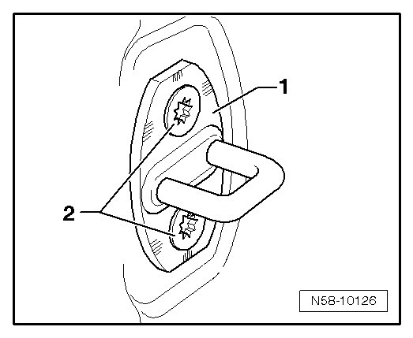

Striker Pin, Adjusting
Front Door
Striker Pin, Adjusting
• The vehicle must standing on all four wheels when adjusting the front door.
• The adjustment described is only for the right front door. The left front door adjustment is similar.
• When closing, the front door must latch completely without having to press it and it must not have any play.
• By adjusting the striker pin, front door must not be pushed upward or downward.
With the latch bracket, one can adjust:
• If the front door adjustment does not align with the rear door.
- Loosen the bracket - 1 - by loosening bolts - 2 - on the B-pillar.

- Adjust front door with striker pin - 1 - so that front door aligns with rear door when closed (wind noise).
- Tighten bolts - 2 - of latch bracket - 1 -.
Tightening specifications: Bolts - 2 - 20 Nm